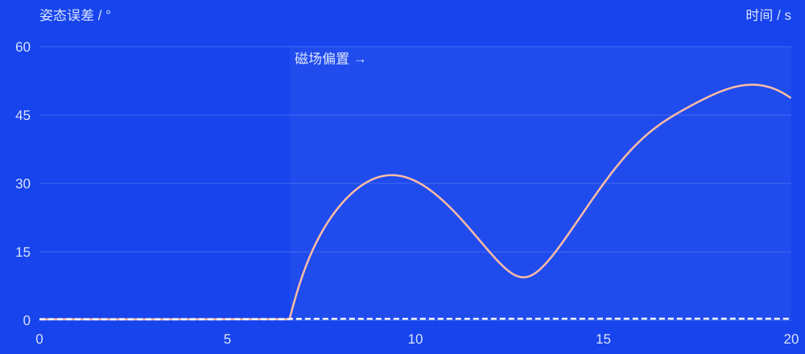

设备。算法。视觉*
三个项目，三种工作尺度。
我开发嵌入式设备与算法，
也研究图像与运动之间的联系。
下面是实现、验证与仍在推进的部分。
dpiny↗
可维护的
RTK 基准站。
不只接通定位模块。
也处理设备运行之后的事。
面向固定部署，将 GNSS 定位、隔离供电、差分数据输出与维护入口整合在一套系统中。实现重点包括数据转发、持久化配置、看门狗，以及复位后的 USB CDC 恢复。
公开固件与工具 ↗不是本次硬件复测，不代表定位精度或长期稳定性认证。
＋ 固件结构与验证材料
Core 组织 GNSS、Shell、配置与看门狗；USB_DEVICE 提供 CDC 集成；tools 包含构建、烧录、RTCM 和寄存器检查工具。公开台架记录包含 6 秒 RTCM 采集、2520 bytes 数据与帧校验。
阅读完整案例 ↗Aerakia
读数受干扰，
朝向估计会怎样？
姿态估计将传感器数据转换为设备朝向。Aerakia 实现并比较不同算法配置，用可重复的合成输入，观察磁场干扰、航向突变和数据中断下的响应。
一个场景。
2000 个实际输出点。
20 秒 / 100 Hz / 种子 7。6.66 秒起加入磁场偏置。以下曲线来自公开 C runner，不是手绘趋势。

公开范围是算法层与主机验证，不是完整飞控。该场景结果不构成飞行精度、安全或产品可靠性结论。
Splicia显微视觉与
精密对准平台。
INPROGRESS
从相机图像到运动控制，中间还有标定、估计与闭环。Splicia 目前先完成平台调试与成像链路排查，架构仍在设计。
Linux 平台调试、IMX296 相机发现、media 拓扑与 RAW 输出排查。
采集、视觉、估计、运动、控制、UI、日志与回放边界。
光纤几何提取、标定双视图融合、闭环对准与量化性能验证。